Screenshots in this document show the current state of the PickleBallers application at the time of documentation. Since development continued after the meeting, some visuals may differ from what was discussed on Wednesday or from the final product direction.
They are not a visual record of the meeting. To make the difference explicit, every screenshot carries one of these labels:
| Meeting date | Wednesday, 8 July 2026, evening |
| Participants | Marvin and the PickleBallers project team |
| Primary purpose | To align the direction of the player app, Open Play, venue operations, staff access, social features, coaching, and payment-related flows. |
| Status basis | Meeting discussion plus the actual implementation completed or reviewed after Thursday and Friday development work. |
| Evidence basis | All screenshots were captured from the running application on 12 July 2026 — the player app on a 390 × 844 phone viewport, and the owner/staff console at 1440 × 900. Nothing shown is a mock-up. Because they were taken after two further days of development, they show the product as it stands today, not as it stood at the meeting. |
| Document purpose | To give Marvin, the team, and other stakeholders a complete but readable record of what was discussed, what has shipped, what remains incomplete, and what requires a business decision. |
The Wednesday meeting established the direction of PickleBallers as one application serving several roles: ordinary players, venue owners, organizers, venue staff, and coaches. The central idea was to make finding and joining play easier, while also giving venues enough tools to manage the real-world bookings they already receive through calls, Messenger, social media, and walk-ins.
A substantial part of that agenda was delivered in the two days following the meeting. The Play experience was reorganized, the Discover listing gained a real relevance system, manual reservations were added, venue staff permissions were restricted, Social became more prominent, and coaching became available from the player homepage.
The current Open Play flow is built around a simple “Interested” action. It does not contain the lobby, roster, approval stages, or Messenger-style group chat discussed during the meeting. Adding those now would change the newly completed flow, so the team must align on the direction before proceeding. See section 7 for the screenshots that show this side by side.
The second major gap is player eligibility. The meeting clearly raised women-only, men-only, skill-based, and similar restrictions. These rules do not yet exist in the current application, which means restricted sessions cannot be properly created or enforced.
The remaining open areas are mainly business decisions rather than simple interface fixes: who pays for different types of Open Play, whether every Open Play needs a lobby, how coach session payments and commissions should work, and how eligibility should affect visibility and joining.
Reviewing the running application against the earlier written status turned up two items that were reported as finished but are not:
PickleBallers will continue as a single application rather than separate apps for each user type. The experience should change according to the role and permissions of the logged-in user.
The guiding rule is that each person should see the tools needed for their work without exposing unrelated or sensitive information.
The meeting originally moved the player homepage from two general choices toward three clearer actions: Open Play, Book a Court, and Get a Coach.
The current interface has already implemented these ideas using the shorter labels Play, Book Court, and Find Coach. The function is aligned with the discussion, but the final wording should be confirmed by the team.
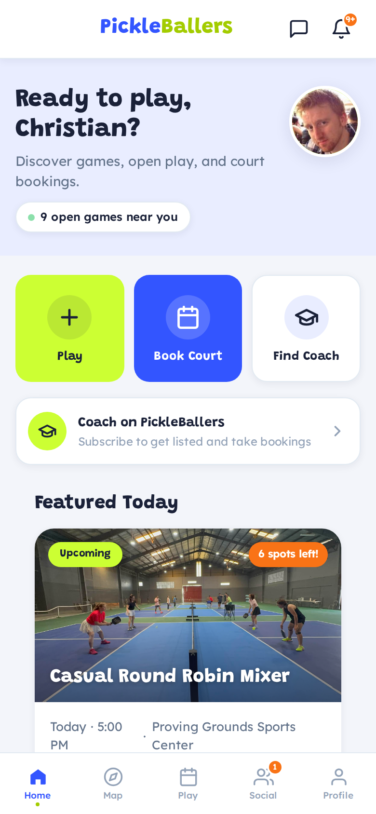
Open Play was identified as the most common player need. The agreed direction was to avoid making users click Play and then choose Open Play from another screen. Instead, the main Play action should bring the player directly to the Open Play Discover listing. This works today — tapping Play lands straight on the Discover list shown in section 4.2.
Events must remain easy to find because they represent more structured organizer-led activity. However, Events should sit alongside Open Play rather than blocking the user with an additional choice before showing any sessions.
Open Play covers casual or semi-structured sessions that may be created by ordinary players, venue owners, or organizers. Events cover more formal activities that may involve mechanics, brackets, categories, registration rules, and organizer control.
The meeting agreed that the distinction should be visible through tabs or icons, not hidden inside a dropdown.
Open Play and Events are selected through a dropdown. Tapping it opens a small menu containing the two options. The visible tabs on this screen (Discover / Joined / Manage) switch the view, not the section — so a player who never opens the dropdown may not realise Events exists at all. This is precisely the outcome the meeting asked the team to avoid.
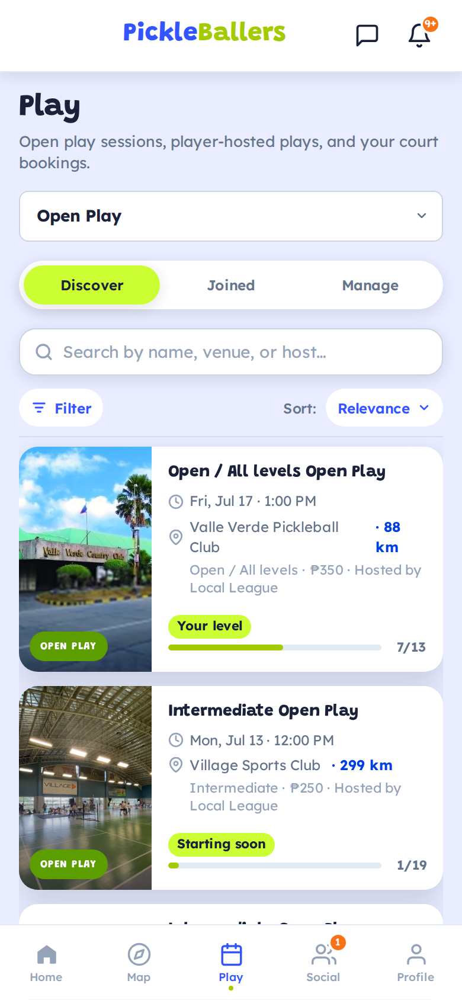
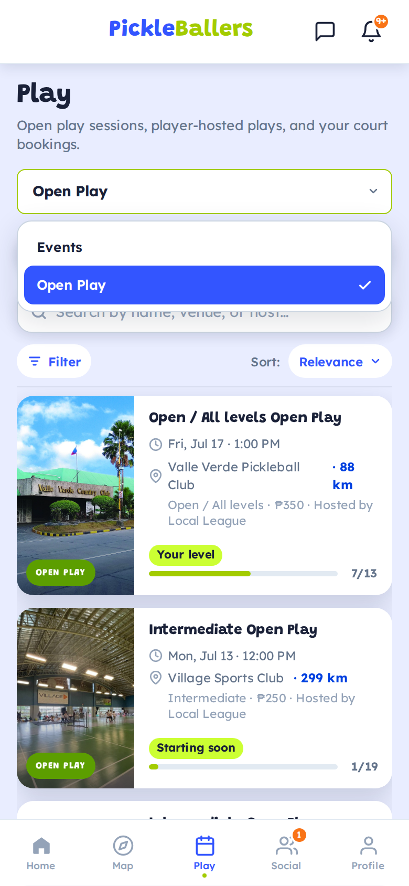
The Open Play area was discussed as having three possible destinations depending on the user’s activity:
The interface should not display empty or irrelevant sections merely for consistency. When there are no invitations or no joined sessions, the application should guide the player back to useful actions instead of showing a dead end. This behavior has largely been implemented — in the screenshot below the Joined and Invites tabs are absent entirely because this player has neither, leaving only Discover and Manage.
Before the meeting, Discover depended too heavily on proximity. The agreed direction was to create a more useful listing that considers several signals instead of simply showing the nearest session first.
A working relevance system has now been delivered. It currently uses the following balance:
| Signal | Weight | Plain-language meaning |
|---|---|---|
| Time fit | 30% | How soon the session begins and whether there is enough time for the player to get there. |
| Proximity | 25% | How close the venue is to the player. |
| Skill fit | 20% | How well the player’s rating matches the session’s intended level. |
| Spots left | 15% | Whether the session still has room and whether it is nearing capacity. |
| Friends | 10% | Whether a friend is hosting or attending the session. |
The system also handles incomplete player profiles sensibly. When the app does not know the player’s location or skill rating, those factors are removed and the remaining factors are rebalanced rather than producing a misleading order. Forty-five automated checks currently pass for this relevance behavior.
At present, the ranking is calculated inside the application. It works, but centralizing it later would help ensure that all devices receive the same ordering and make future tuning easier.
The meeting emphasized that players often recognize a venue and court more readily than a creative session title. The venue and court therefore need to be immediately visible on each listing, together with the practical details needed to decide whether to join.
The current cards now show venue, skill level, distance, price, and host name, alongside the session title, date and time, and a fill bar showing remaining spots.
The following sorting options are now available: Relevance, Start time, Distance, Spots left, and Recently added.
The following filters are currently available: date (today, tomorrow, weekend, or a selected date), skill level, play type, sessions with openings, and distance.
The meeting also discussed additional filters that have not yet been completed, including gender eligibility, free or paid sessions, venue or location, public or invitation-only sessions, and recurring or one-time sessions. The screenshot below shows the filter sheet exactly as it ships — those options are simply not there yet.
The filters were designed not to dominate the listing. Active filters are visible, distance is no longer applied invisibly by default, and the player can recover easily when a filter returns no results.
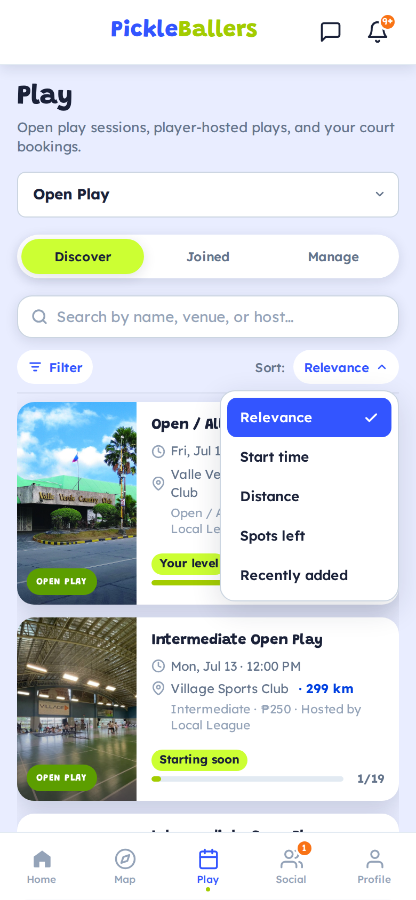
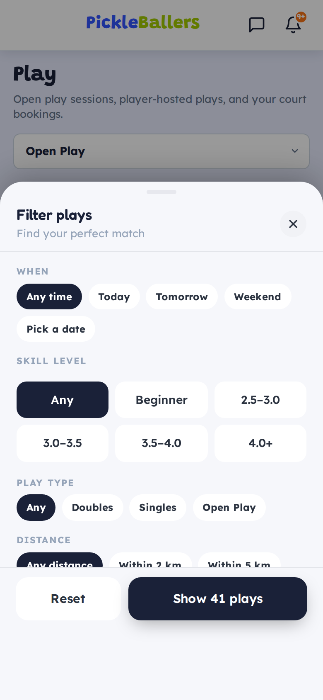
The meeting clearly identified that not every Open Play session should be available to every player. Examples included women-only, men-only, open-to-everyone, beginner-only, and sessions intended for specific skill levels.
The current application has no working gender or general eligibility rule for Open Play. A host cannot create a women-only or men-only session, and the application cannot prevent an ineligible player from joining. There is no such field on the session, no such filter in the sheet above, and no such check when a player joins. This remains one of the most important unfinished items.
The team must confirm whether ineligible sessions should be hidden completely or remain visible but marked as unavailable. That decision affects Discover, filtering, ranking, and the join action. The diagram below sets out the two options — neither is built yet.
The meeting recognized that many venue bookings still arrive outside the app through Messenger, Facebook, calls, group chats, and walk-ins. PickleBallers should support this reality instead of expecting every customer to install the app immediately.
Venue owners and authorized staff can now record a reservation on behalf of a customer for a venue they are allowed to manage. This creates one operational schedule even when the booking originated elsewhere.
A dedicated manual reservation flow is now available. It records the court, date, time, customer, amount, payment method, and booking source. Sources include Walk-in, Phone, Messenger, Instagram, and Other; payment can be recorded as Cash, GCash, Transfer or Card.
Once entered, the reservation appears in the venue calendar, blocks the selected court and time, and prevents double-booking. This completed two closely related meeting requests: owner-assisted booking and manual offline reservations.
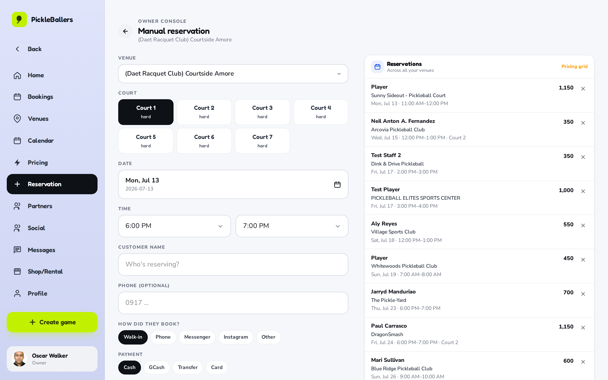
The reservation then lands on the court calendar and holds the slot. The calendar below is the same owner’s venue after three entries were recorded — two manual reservations and one maintenance block. Attempting to record a second booking over an occupied slot is refused by the server, so the calendar cannot be double-booked.
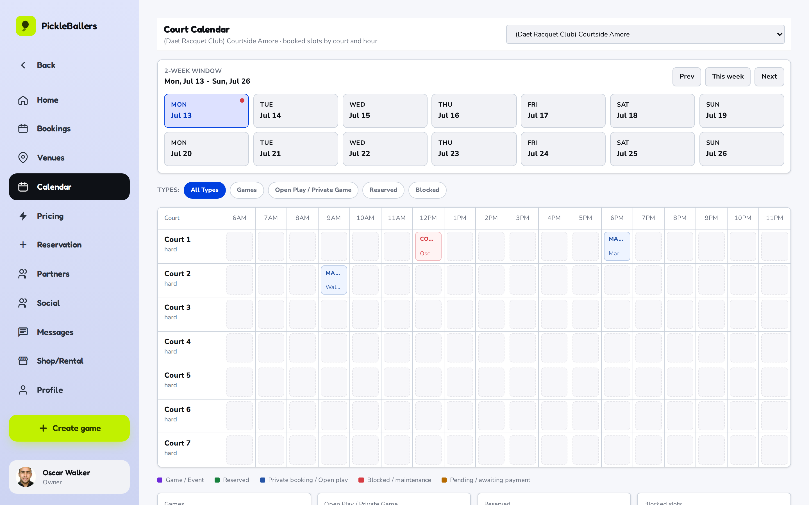
The meeting added recurring Open Play as a requirement because many venues and organizers run the same session every week or on selected days.
Recurring sessions are partly available today: organizers have a “Recurring sessions” screen where they can create a repeating series that generates individual weekly sessions. However, ordinary venue owners cannot create recurring Open Play from their own console, and the system does not yet offer complete controls for changing only one occurrence, future occurrences, or the whole series.
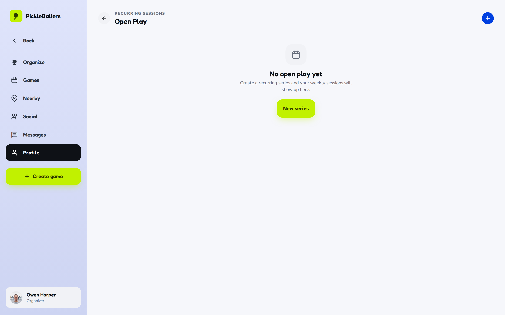
Venue staff was introduced as a separate role because owners cannot personally operate every booking, customer interaction, and on-site activity. Staff should be able to perform day-to-day work while remaining restricted from owner-only information and authority.
The current implementation already provides a real staff role tied to an owner and their venues.
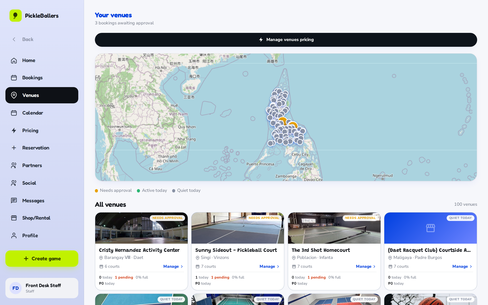
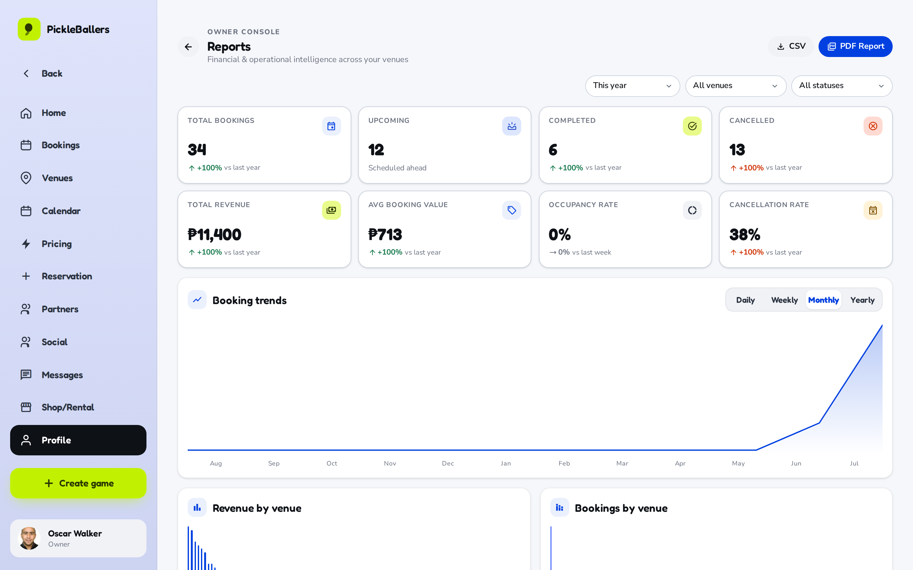
The Reports page is properly restricted. But the staff home screen still displays “Revenue · this month ₱9,400”, revenue for the week, and the full venue and court counts. The screenshot below is a genuine staff account. The meeting stated that staff should not automatically see full finances or sensitive business information, so this does not yet meet the agreed rule.
Cause: the staff role currently keeps the “view analytics” permission and only loses the “view reports” one. Fix: small and contained — hide the revenue tiles from the staff dashboard, or split the analytics permission. It needs a decision on what staff should see: nothing financial at all, or today’s takings for their own shift?
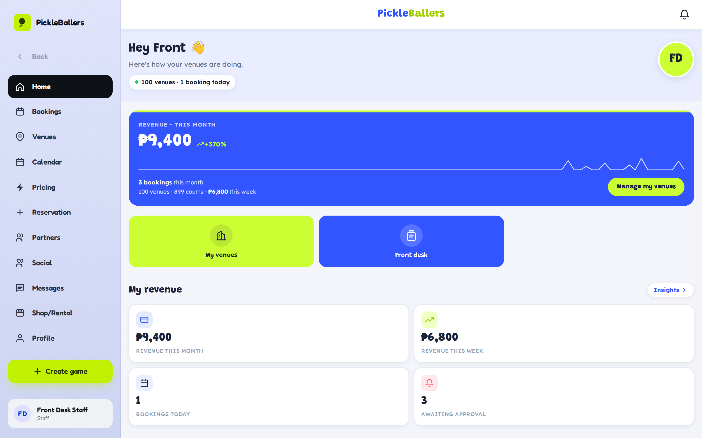
Apart from that gap, this area is settled unless the team wants a more detailed permission structure for different staff positions.
The meeting described a lobby as the holding area connected to a play session. It would contain the host, confirmed players, invited players, pending requests, and a dedicated group conversation. The intended chat would behave more like a Messenger group than a simple comment section.
The lobby was expected to help players coordinate arrival, schedule changes, court changes, missing players, equipment, cancellations, and other session-specific updates.
Open Play currently uses a simple interest-based flow. A player taps “I’m Interested,” and there is no Open Play lobby, confirmed or pending roster, approval stage, or dedicated group chat. Structured organizer-run game flows already contain roster and chat capabilities, but they are not attached to Open Play.
The three screenshots below make the difference concrete. The first is an Open Play session — the whole interaction is a single “I’m Interested” button and a count. The second and third are an ordinary Game lobby, which already has the roster, the host, a join state and a working Messenger-style group chat. The machinery the meeting asked for already exists — it is simply not wired to Open Play.
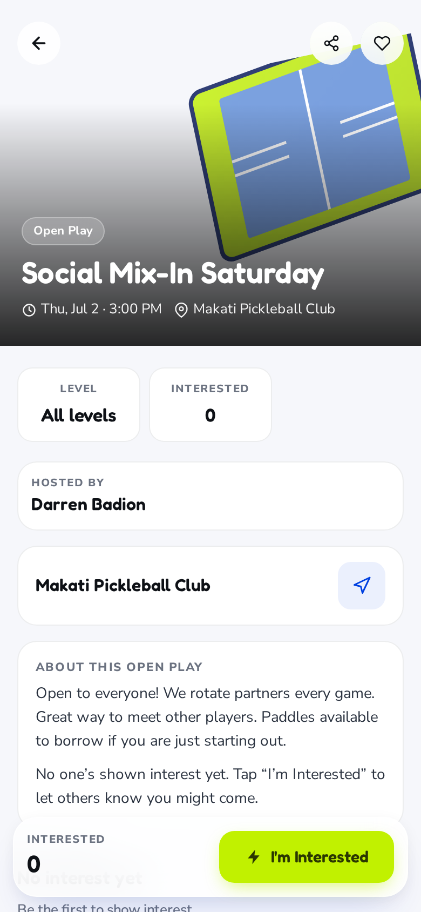
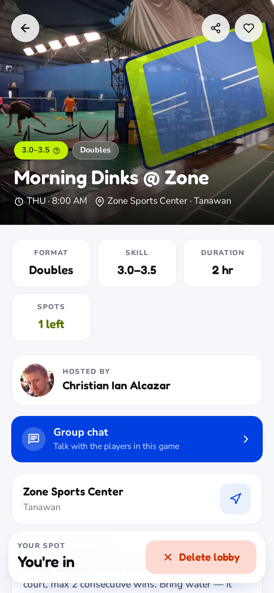
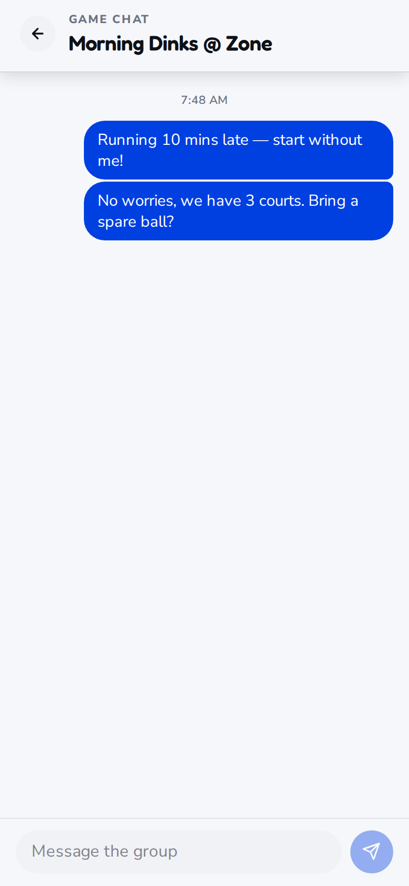
This is not a minor missing button. The meeting and the current implementation represent two different product approaches. Building the lobby now would require changing the Open Play join flow that was just completed. The team must therefore decide whether Open Play should remain a lightweight expression of interest or become a managed lobby with membership states and conversation.
The meeting agreed that the social side of PickleBallers should become easier to see. Friends were previously hidden inside the profile, while the word Clubs was too narrow to represent friends, communities, posts, and future social activity.
The current application now combines Clubs and Friends under a visible Social section. A live badge shows pending friend requests, and the player homepage includes a Friends area with existing friends and suggested players. These changes make the social function easier to discover without adding another permanent navigation item — the bottom bar still holds five buttons.
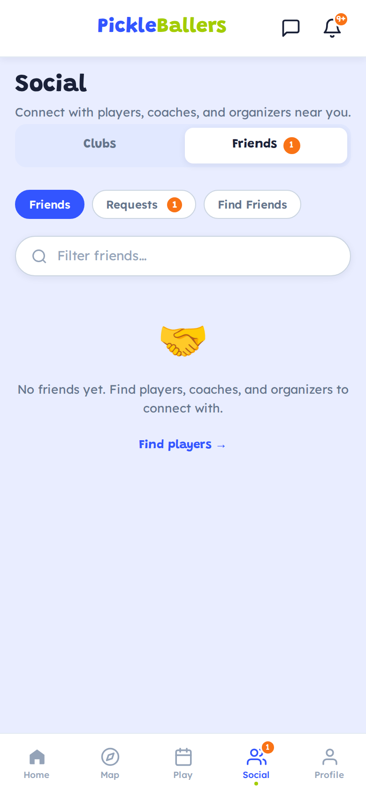
A full Facebook-style global feed has not yet been built. Club-specific feeds already support posts, photos, comments, likes, and live updates. The broader feed and reaction model remain open.
The app currently uses Like inside club feeds and Interested for Open Play. The team should confirm whether those are intentionally different actions or whether PickleBallers should use a more consistent reaction system. This also has to be settled before a platform-wide feed is designed, because the feed is where the two would meet.
The meeting introduced coaching as a third main service alongside playing and booking a court. The current player homepage now includes Find Coach (see section 3.2), and players can search a coach directory showing photo, specialty, rating, and hourly rate.
Coach functionality is currently funded through a ₱499 subscription valid for 30 days. The price and duration can be changed through administration settings without requiring an app update. Only actively subscribed coaches appear in the player-facing directory — which is how a player knows that every coach they see is a real, paying professional.
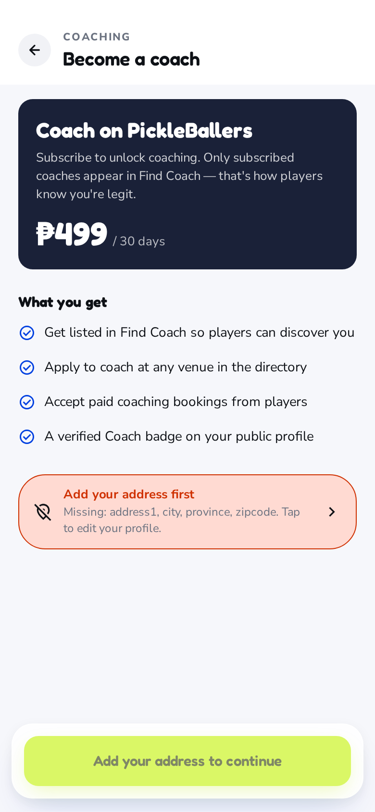
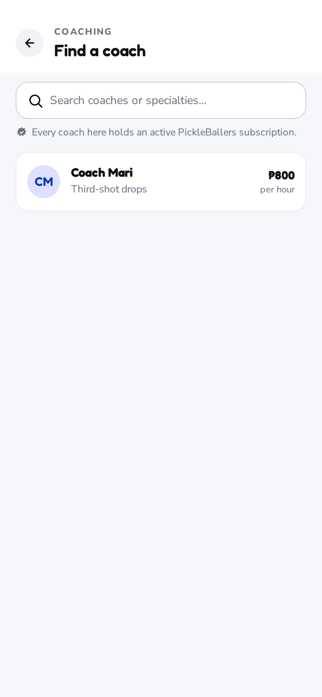
Players can request a coaching session by selecting the date, start time, and adding a note about what they want to work on. The coach can accept or decline, and the system calculates the rate from the coach’s saved price rather than trusting the app.
No payment is collected for the coaching session. The flow states plainly: “Nothing is charged now — you pay the coach once they accept.” There is no coach payout, commission, or platform-fee mechanism yet. The meeting did not settle how coach payments should work, so this area correctly remains incomplete. The separate ₱499 coach subscription is live; session-level payments are not.
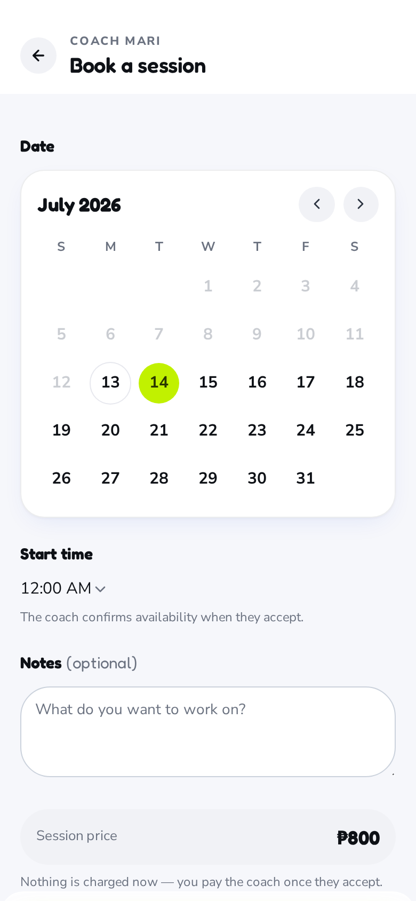
The meeting discussed different payment treatment depending on who creates the Open Play session:
This was a working direction, not a finalized business rule. The current application does not enforce the difference based on host type. Sessions may carry a price, but the full collection, refund, commission, and payout rules are not implemented.
Before payment development continues, the team should confirm who is allowed to charge, who receives the money, when PickleBallers takes a fee, and what happens when a session is cancelled.
A cart-style booking flow was mentioned as a possible future direction, allowing a player to combine a court, coach, and other services before checkout. This idea was not discussed in enough detail to be considered an approved flow, and no current implementation exists — there is no cart anywhere in the application.
It should remain an exploratory item until the team confirms which services may be combined, how schedules are checked, and how payment is divided among the venue, coach, and platform.
| Meeting item | Status | Current reality |
|---|---|---|
| Player homepage with Play, Court, and Coach actions | Completed | Implemented with shorter labels: Play, Book Court, and Find Coach. (§3.2) |
| Play opens Open Play Discover directly | Completed | No unnecessary intermediate choice. (§3.3) |
| Open Play and Events visible together | Not as specified | Corrected: Events sits inside a dropdown — the one outcome the meeting asked to avoid. (§3.4) |
| Discover, Invites, and Manage behavior | Largely completed | Empty tabs are hidden and empty states now offer to book a court. (§4.1) |
| Discover relevance system | Completed | Uses time, distance, skill, openings, and friends; 45 passing checks. Runs on the device. (§4.2) |
| Sorting and filters | Partly completed | All five sorts exist; five filters exist. Eligibility, paid/free, invite-only and recurring filters are missing. (§4.3) |
| Venue and court prominence | Completed | Cards show venue, skill, distance, price, host and spots. (§4.4) |
| Booking on behalf of customers | Completed | Available to owners and their staff. (§5.1) |
| Manual offline reservations | Completed | Blocks the calendar, records the source, and refuses double-booking. (§5.2) |
| Venue staff role and restricted access | Partly completed | Corrected: role, venue inheritance and delete/report restrictions all work — but staff can still see venue revenue on their home screen. (§6) |
| Friends and Social visibility | Completed | Social tab, friend-request badge, and homepage Friends area are live. (§8) |
| Recurring Open Play | Partly completed | Organizer-only “New series”; not available to venue owners, and no series editing. (§5.3) |
| Coach discovery and booking | Completed | Subscription, directory and request flow all work. (§9) |
| Coach session payment | Pending decision | No payment, commission, or payout mechanism. (§9.3) |
| Gender and eligibility rules | Not started | No field, no filter, no join check. Cannot create or enforce a women-only session. (§4.5) |
| Open Play lobby | Pending decision | Open Play is interest-based and has no lobby. Games have one. (§7) |
| Lobby-specific chat | Pending decision | Group chat exists for games; not attached to Open Play. (§7.2) |
| Global social feed | Not started | Club feeds exist, but not a platform-wide feed. (§8) |
| Open Play payment rules by host type | Pending decision | Discussed but not enforced anywhere. (§10) |
| Cart-style booking | Exploratory | No approved flow or implementation. (§11) |
The following decisions should be resolved before the team invests further work in the affected areas. They are listed in priority order.
The current application uses Interested as a lightweight action. The meeting discussed a fuller lobby with confirmed, invited, and pending players plus group chat. The team must choose the intended product direction because the two approaches require different flows and expectations. See §7 — the two paths are shown side by side.
Confirm whether organizer- and venue-hosted sessions may charge joiners while ordinary player-hosted sessions remain free to join because the original player already paid for the court. The team should also confirm who receives the payment and whether PickleBallers takes a fee. See §10.
Confirm that hosts may set restrictions such as women-only, men-only, beginner-only, or a rating range. Then decide whether ineligible players should not see the listing at all or should see it marked as unavailable. See §4.5.
Confirm when payment is collected, who receives it, whether a venue receives a share, whether PickleBallers charges a commission, and what cancellation and refund rules apply. See §9.3.
Like currently applies to social posts, while Interested applies to Open Play. Confirm whether both should remain as different actions and how this should carry into a future global feed. See §8.
The meeting used Open Play, Book a Court, and Get a Coach. The current interface uses Play, Book Court, and Find Coach. The functionality is already in place; only the preferred wording needs confirmation. See §3.2.
These need a decision only because they change what “finished” means:
The PickleBallers project moved forward substantially after the Wednesday meeting. The main Play experience is clearer, Discover is more intelligent, venue operations better reflect real-world booking practices, staff access is safer, Social is easier to reach, and coaching is now a visible part of the player journey.
The remaining work is concentrated in a few important product decisions rather than a large number of unrelated tasks. The most urgent decision is whether Open Play remains a simple Interested flow or becomes a lobby-based experience with managed participation and group chat. Eligibility and payment rules follow immediately after that.
Reviewing the running application also showed that two items previously reported as complete are not: Events is still inside a dropdown, and venue staff can still see venue revenue. Both are small fixes, but both are gaps against rules the meeting had already agreed, and they are worth closing before new work begins.
Once those decisions are confirmed, the team can proceed with a much clearer understanding of what to preserve, what to expand, and what should remain outside the immediate scope.
The project has already delivered a meaningful portion of the Wednesday agenda. The next phase should focus less on adding more ideas and more on confirming the few product rules that determine how Open Play, eligibility, and payments will work.
Sections 1–15 above cover the Wednesday meeting and the work done against it. Section 16 below is deliberately kept separate: it records product directions that are visible in the application today but were not part of the original meeting.
Reviewing the running application surfaced several features and flows that are already built, or partly built, but were not discussed at the Wednesday meeting. None of them is approved, finalized, or part of the original agreement. They are listed here because each one has a visible interface, and each could change the product’s direction, commercial model, or scope if left unexamined.
Minor interface changes and technical housekeeping are deliberately excluded. Every item below is something a user or a venue can already see and use.
Current state. A player pays ₱499 for 30 days to become a coach. Without an active subscription they do not appear in Find Coach and cannot take bookings. Price and duration are editable from admin settings. This is currently the platform’s only working revenue mechanism (see §9.2 for the screen).
Why it needs discussion. This is a business-model decision, not just a feature. It sets who pays PickleBallers (the coach, up front) rather than the player or the venue, and it means the platform earns nothing from the coaching sessions themselves. It may also limit coach supply early on, since a coach must pay before earning anything.
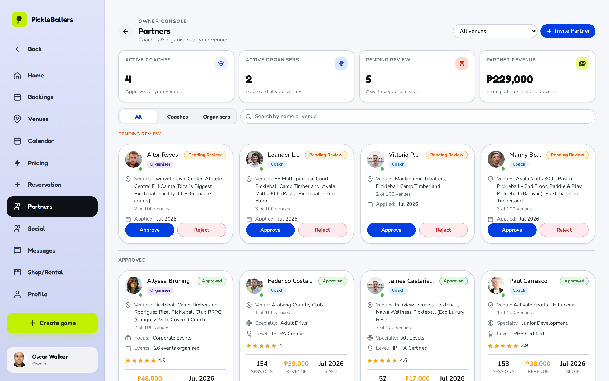
Current state. Owners see pending coach and organizer applications with Approve / Reject actions, an “Invite Partner” action, and counts of active coaches and organizers. Approved coaches show sessions delivered and revenue earned at that venue.
Why it needs discussion. This quietly answers a question the meeting left open, and goes further: it implies that venues have a commercial relationship with coaches and that revenue is attributable to a venue. That sits directly on top of the unresolved coach-payment question in §9.3 — the app is already reporting partner revenue that the platform does not actually collect or split.
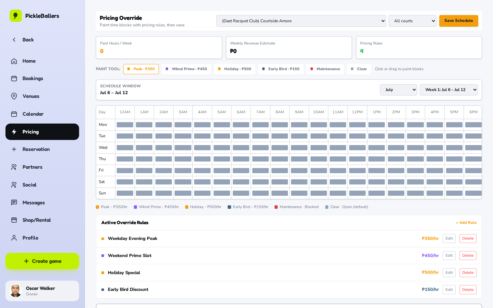
Current state. A venue’s hourly rate can vary by day, hour, weekend, holiday, and early-bird window. The rules are live and drive what a player is charged when booking.
Why it needs discussion. Variable pricing changes what a player sees on a listing card and how “price” should behave in Discover filters and sorting — a filter the meeting asked for (“free or paid”) but which does not yet exist. It also interacts with the unresolved Open Play payment rules: if a player-hosted session sits on a peak-priced court, the host has paid more, which strengthens the case for cost-splitting.
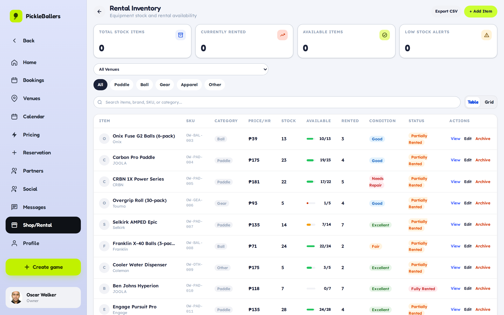
Current state. Owners can add items, price them per hour, and track what is rented, available or needing repair. The stock in the screenshot is seeded demo data, but the system is functional.
Why it needs discussion. Rental is a distinct commercial line with its own rules — deposits, damage, late returns, and whether the platform takes a cut. It also connects to the cart idea in §11: renting a paddle alongside a court booking is exactly the kind of thing a cart would exist for. Right now there is no player-facing way to rent anything, so the feature is half a product.
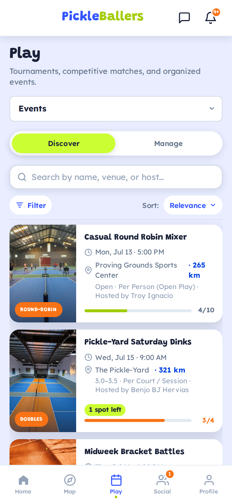
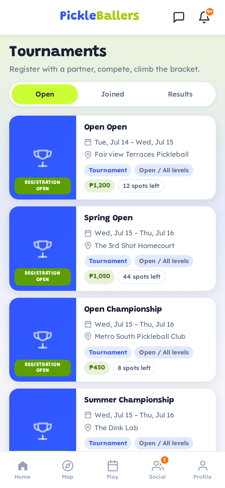
Current state. The thing the meeting called “Events” is, in the app, a list of player-hosted games. The thing the meeting described — registration, brackets, divisions, entry fees — exists, but in a separate Tournaments area that is not part of the Play section the meeting designed.
Why it needs discussion. The meeting’s central navigation decision was “Open Play and Events, side by side, both visible”. If Events does not hold events, that decision has not really been implemented, regardless of the dropdown issue in §3.4. Players who want a tournament will not find one where the meeting expected them to look. Tournament entry fees are also, notably, real money the platform already handles — which is relevant to the unresolved payment discussion.
Current state. A venue can be set to require approval. The player requests the booking, the owner approves it, and only then does the player pay within a time window. Pending requests are visible throughout the owner console — the venue screens in §6 show “3 bookings awaiting approval” and “NEEDS APPROVAL” badges on venue cards.
Why it needs discussion. This introduces a second, slower booking path with a payment deadline attached, and the meeting’s Open Play discussion assumed a booked-and-paid court. If a player hosts an Open Play session on a court that is still awaiting approval, it is not clear what other players should see or whether they can join.
Nothing in section 16 is being proposed for approval here, and nothing in it was agreed on Wednesday. The purpose is to make sure the team sees what the product has become between meetings, so that the direction is chosen deliberately rather than inherited from whatever happened to be built.